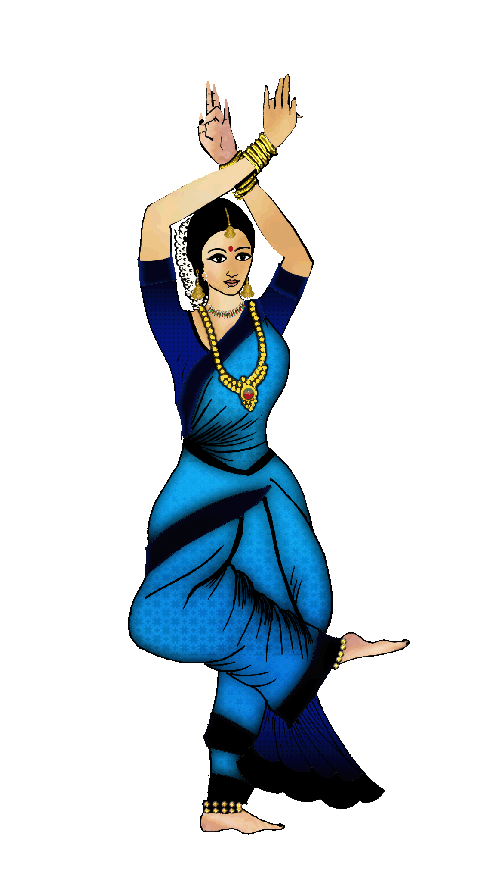

what is namashkara ?
Bharatanatyam prayers or slokas including Guru Stuthi, Dhyana Sloka or Namaskriya, Saraswathi Devi Sloka, Gnananandamayam Devam sloka or Sri Hayagreeva Sloka, Samudravasane Devi Sloka or Natyarambam Sloka along with bhoomi pranam is demonstrated in this video
1. Initial Position
- Stand erect. Feet joined, stomach tucked in & back straight.
- Place your hands in front of your chest - join index and middle finger with your thumb and stretch out other two fingers (katakamukham gesture)
2. Movement
- In this initial position, hit your right leg and then your left leg.
3. Change
- Keep a thumbs-down hand gesture above your shoulders
- Open out your arms and stretch them out in from of you. (thumbs in opposite directions)
4. Sitting position
- Sit in Muzhu Mandi - heels joined, toes in opposite direction & thighs strecthed out as much as possible. {Hands will be similar to (3) }
- Touch the ground with both hands. (place your thumb under three fingers that are slightly bent. Let the little finger stretch out)
- Touch your eyes.
5. Final position
- Stand up straight with the "Namaste" gesture.